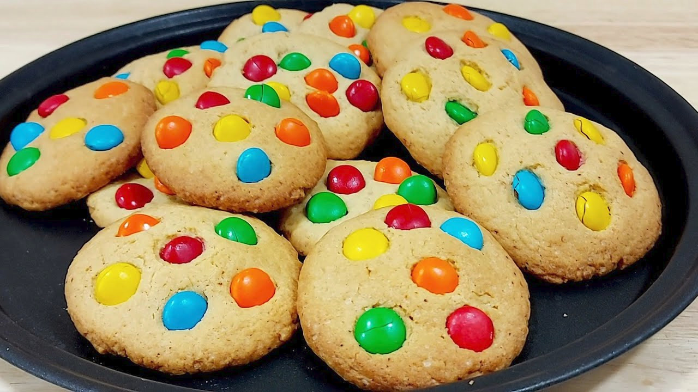
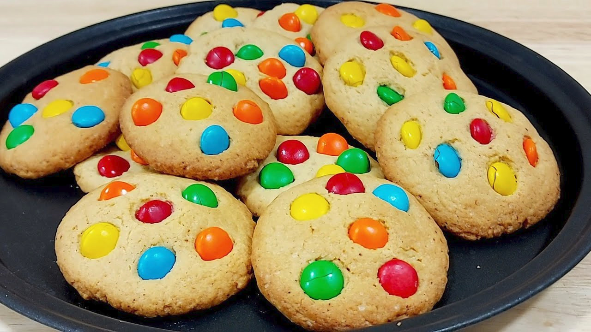
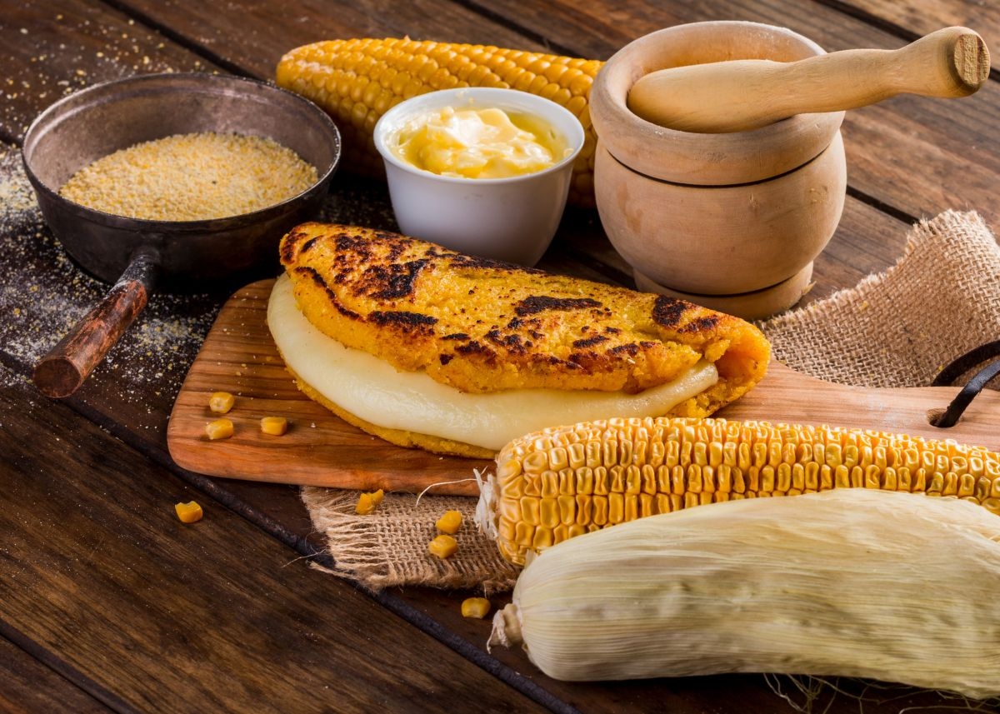
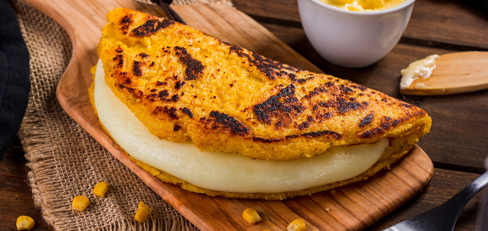

Listas HTML
- Salir a pasear en bicicleta
- Comer
- Ver peliculas
- Pasar tiempo con mi familia
- Dormir
- Hamburguesa
- Papas fritas
- Las hallacas
- El arroz con pollo
- El sushi
- Hardware
Son los componentes fisicos de un dispositivo tecnologico
- Software
Es un conjunto de programas y sistemas que permiten operar un dispositivo tecnológico
- Redes
Son sistemas que conectan disposistivos para compartir información y recursos
- Almacenamiento
Es la capacidad de guardar datos en un dispositivo o sistema
- Procesadores
Son componentes que ejecutan las intrucciones de un dispositivo tecnológico
- Receta de galletas
- 2 tazas de harina (280 gramos)
- ½ taza de azúcar (100 gramos)
- 125 gramos de mantequilla
- 1 huevo
- 1 cucharadita de esencia de vainilla (opcional)
- 1 tarro de dulce de leche o virutas de colores para decorar
- Introduce la harina y la mantequilla y mezcla bien ambos ingredientes
- Incorpora el azúcar, el huevo y la esencia de vainilla cuando la harina y la mantequilla estén bien integradas y sigue mezclando
- Amasar hasta que la mezcla se torne compacta y no se pegue en las manos
- Coloca la masa sobre una superficie y extiéndela con la ayuda de un rodillo
- Seguido de esto, con un molde dales forma
- Mete las galletas al horno, durante 15 a 20 minutos
- Una vez ya horneadas, es hora de decorarlas
 

- Receta de pasta con ajo y aceite (Aglio e Olio)
- 200 g de pasta (spaghetti o fettuccine)
- 3 dientes de ajo, finamente picados
- 4 cucharadas de aceite de oliva
- 1/2 cucharadita de hojuelas de chile (opcional)
- Sal al gusto
- Perejil fresco picado (para decorar)
- Cocina la pasta en agua con sal siguiendo las instrucciones del paquete. Escurre y reserva 1/4 de taza del agua de cocción
- En una sartén grande, calienta el aceite de oliva a fuego medio. Agrega el ajo y las hojuelas de chile, y cocina hasta que el ajo esté dorado (1-2 minutos)
- Añade la pasta cocida a la sartén y mezcla bien. Si está seco, incorpora un poco del agua de cocción reservada
- Ajusta la sal al gusto y sirve caliente, decorado con perejil fresco picado

- Receta de Cachapas venezolanas
- 2 tazas de granos de maíz tierno (puedes usar maíz enlatado bien escurrido)
- 1/4 de taza de leche
- 2 cucharadas de azúcar
- 1 cucharadita de sal
- 2 cucharadas de harina de maíz (opcional, para espesar)
- Mantequilla para engrasar la sartén
- Queso fresco o queso de mano (para rellenar)
- Licúa los granos de maíz junto con la leche, el azúcar y la sal hasta obtener una mezcla ligeramente espesa pero con textura. Si está muy líquida, añade la harina de maíz para espesar
- Calienta una sartén antiadherente a fuego medio y engrásala con un poco de mantequilla
- Vierte una porción de la mezcla en la sartén, formando un círculo (como si hicieras un panqueque). Cocina por 2-3 minutos por cada lado, hasta que estén doradas y firmes
- Retira del fuego, unta con mantequilla y rellena con queso fresco o de mano. Dobla por la mitad y sirve caliente

